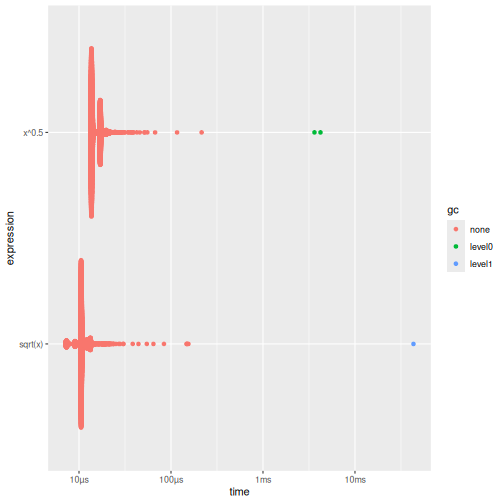

All in One View
Content from Introduction to profiling
Last updated on 2026-11-14 | Edit this page
Overview
Questions
- Why should you profile your code?
- What are the options for profiling in R?
- Which test case should be profiled?
Objectives
- Explain the benefits of profiling code
- Differentiate between types of profiler
- Explain how to select an appropriate test case for profiling
Introduction
Performance profiling is the process of analysing and measuring the performance of a program or script during its execution. Here, performance means how efficiently your code uses resources, especially time (how long it takes to run) and memory (how much RAM it needs), to produce a correct result.
Good performance is fast enough for your purposes, rather than necessarily as fast as possible. Profiling is useful when you have written any code that will be running for a substantial period of time. As your code grows in complexity, it becomes increasingly difficult to estimate where time is being spent during execution. Profiling allows you to measure and visualise where the time is being spent, and therefore where to focus your efforts on optimising your code for performance speed-ups.
Profiling is a relatively quick process which can either provide you the peace of mind that your code is efficient, or highlight any performance bottlenecks. There is limited benefit to optimising components that may only contribute a tiny proportion of the overall runtime. Identifying bottlenecks allows optimisation to be precise and efficient, potentially leading to significant speed-ups enabling faster research. In extreme cases, addressing bottlenecks has enabled programs to run hundreds or thousands of times faster!
Increasingly, particularly with relation to HPC, attention is being paid to the energy usage of software. Profiling your software will provide you the confidence that your software is an efficient use of resources.
When to profile
Profiling is most relevant to working code, when you have reached a stage that the code works, i.e. produces correct results, and are considering deploying it.
Any code that will run for more than a few minutes over its lifetime and isn’t a quick one-off script can benefit from profiling.
All Programmers Can Benefit
Even professional programmers make oversights that can lead to poor performance, and which can be identified through profiling.
For example, Grand Theft Auto Online, which has allegedly earned over $7bn since its 2013 release, was notorious for slow loading times. 8 years after its release a ‘hacker’ had enough. They reverse engineered and profiled the code to enable a 70% speedup!
How much revenue did that unnecessary bottleneck cost, through user churn?
How much time and energy was wasted, by unnecessarily slow loading screens?
Types of profiler
There are multiple approaches to profiling. Most programming languages have one or more tools available covering these approaches. Whilst these tools differ, their core functionality can be grouped into several categories.
Manual profiling
Similar to using print() for debugging, manually timing
sections of code can provide a rudimentary form of profiling.
R
t_a <- proc.time()["elapsed"]
# A: Do something
t_b <- proc.time()["elapsed"]
# B: Do something else
t_c <- proc.time()["elapsed"]
# C: Do another thing
t_d <- proc.time()["elapsed"]
paste("A:", t_b - t_a, "seconds")
paste("B:", t_c - t_b, "seconds")
paste("C:", t_d - t_c, "seconds")
Above is only one example of how you could manually profile your R code. There are other similar techniques.
Whilst this can be appropriate for profiling narrow sections of code, it becomes increasingly impractical as a project grows in size and complexity.
Furthermore, it is also unproductive to be routinely adding and removing these small changes, especially if they interfere with the required outputs of a project.
We can use benchmarking to more accurately time our code. We will return to this in the episode on microbenchmarking.
Function-level profiling and line-level profiling
Software is typically comprised of a hierarchy of function calls, both functions written by the developer and those used from the language’s standard library and third-party packages.
Function-level profiling analyses where time is being spent with respect to functions. Typically, function-level profiling will calculate the number of times each function is called and the total time spent executing each function, inclusive and exclusive of child function calls.
This allows functions that occupy a disproportionate amount of the total runtime to be quickly identified and investigated.
Line-level profiling provides greater granularity, analysing where time is being spent with respect to individual lines of code. This will identify individual lines of code that occupy an disproportionate amount of the total runtime.
If you are familiar with other programming languages, you may be aware that they may have different tools for function-level and line-level profiling (e.g. Python has cProfile for function-level profiling and line_profiler for line-level profiling, as well as different packages for visualising, e.g. snakeviz and viztracer). However, in R, we have one main package for profiling, profvis, which combines both function-level and line-level profiling, as well as the timing and the visualisation. Working with profvis is the subject of the next episode.
Selecting an appropriate test case
The act of profiling your code, collecting additional timing metrics during execution, will cause your program to execute slower. The slowdown is dependent on many variables related to both your code and the granularity of metrics being collected.
Similarly, the longer your code runs, the more code that is being executed, the more data that will be collected. A profile that runs for hours could produce gigabytes of output data.
Therefore, it is important to select an appropriate test-case that is both representative of a typical workload and small enough that it can be quickly iterated. Ideally, it should take no more than a few minutes to run the profiled test-case from start to finish, though there may have circumstances where something that short is not possible. Be aware, though, that if the test case runs too quickly, or is too small, it may not reveal the bottlenecks that affect the full run.
For example, you may have a model which normally simulates a year in hourly time-steps. It would be appropriate to begin by profiling the simulation of a single day. If the model scales over time, such as due to population growth, it may be pertinent to profile a single day later into a simulation if the model can be resumed or configured. A larger population is likely to amplify any bottlenecks that scale with the population, making them easier to identify.
Exercise (5 minutes)
Think about a project where you’ve been working with R. Do you know where the time during execution is being spent?
Write a short plan of the approach you would take to investigate and confirm where the majority of time is being spent during its execution.
- What tools and techniques would be required?
- Is there a clear priority to these approaches?
- Which test-case/s would be appropriate?
- Profiling is a relatively quick process to analyse where time is being spent and identify bottlenecks during a program’s execution.
- Code should be profiled when ready for deployment if it will be running for more than a few minutes during its lifetime.
- There are several types of profiler each with slightly different purposes.
- The standard package for profiling in R is profvis.
- A representative test-case should be profiled. It should be large enough to amplify any bottlenecks whilst executing to completion quickly.
Content from Profiling with profvis
Last updated on 2026-11-14 | Edit this page
Overview
Questions
- How can the profvis package be used to profile an R program?
- How can the output from
profvis()be interpreted?
Objectives
- Explain how profvis profiles R code
- Use profvis in RStudio to visualise profiling information for an R script
- Interpret profvis views to identify the functions where time is being spent during a script’s execution
- Interpret profvis views to identify the functions which result in heavy memory allocation
Introduction
To make our code more efficient, we first need to identify the bottlenecks, in terms of time and/or memory usage.
Software is typically comprised of a hierarchy of function calls, both functions written by the developer and those used from the language’s standard library and third-party packages.
We will use the profvis package to profile code and visualise the results. profvis is a sampling profiler. It stops the execution of code every few milliseconds and records:
- The call stack: the function currently being executed, the function that it was called from and so on up to the top-level function call.
- The memory allocated and released since the last record.
A sampling profiler makes a trade-off between accuracy and performance. There is always variability in the time it takes a function to run and the accuracy of the timer. Each time you profile, you’ll get a slightly different answer, though the variability is most pronounced in the functions that take the shortest amount of time to run, i.e. those that are of the least interest to us.
Example
Below are some nested functions. The profvis::pause()
function provides a synthetic bottleneck by holding up execution of the
code for the specified number of seconds.
R
top_level <- function() {
profvis::pause(0.1)
middle_level()
bottom_level()
}
middle_level <- function() {
profvis::pause(0.1)
bottom_level()
}
bottom_level <- function() {
profvis::pause(0.1)
}
If we profile the execution of top_level, after 0.1
secs, we’d record the call stack: "pause",
"top_level", i.e. we’re in the execution of
"pause", which was called from "top_level".
After 0.2 secs, we’d record: "pause",
"middle_level", "top_level", i.e. we’re in
"pause", as called from "middle_level", which
in turn was called from "top_level".
Exercise 1
Continuing the example above, write down the call stack from calling
top_level() after 0.3 secs and after 0.4 seconds.
After 0.3 secs: "pause", "bottom_level",
"middle_level", "top_level"
After 0.4 secs: "pause", "bottom_level",
"top_level"
Using profvis
Follow along
Download the R source for the example and follow along with the worked example on your own machine. Save it into an RStudio project.
You should have installed the profvis package as
part of the setup for this lesson. In the RStudio project where you have
saved the example R script, create a profiling.R script
with the following:
R
library(profvis)
source("profiling-example-1.R")
profvis(top_level())
Storing code in its own script then calling it with
source() ensures the best connection between profiling data
and source code.
Note that at the time of writing, profvis appears to work in Positron, but gives unexpected results. Use RStudio for profiling R code.
Interpreting the flame graph
An interactive HTML document will open with the results. In RStudio this will open in the source pane; click “show in new window” button to open the document in a new window. It should look something like this:

In the flame graph the yellow bars correspond to lines in the source file shown above the graph. The HTML is interactive. Hover over a bar for further details, and to see its corresponding line in the script.
In the overall time of 360ms we see:
- Four equal-sized blocks for each pause of 90ms (0.09 seconds)
- All time is spent in the top-level function
- Half the time is spent in the mid-level function
- Half the time is also spent in the bottom-level function
No objects are created or deleted: no memory changes.
Why might the calls to pause(0.1) show as taking 90ms,
rather than 100ms?
Interpretting the data tab
The Data tab shows a table with the memory and time usage for each function call. The nested calls can be expanded/collapsed to show/hide the corresponding lines. It contains the same information as the flame graph, but is useful for large or deeply nested call stacks.

Memory profiling
Profiling also records memory usage. Creating unnecessary objects is not efficient: it takes time as well as compute resources.
To demonstrate memory profiling we can consider a loop that combines
values. As it is a small code snippet, we can pass to
profvis() directly:
R
profvis({
x <- integer()
for (i in 1:50000) {
x <- c(x, i)
}
})

As expected, the majority of the time is spent within
c(), but we also see a lot time spent in
<GC>. This is a special entry on the flame graph
showing when the garbage collector is running. It is usually an
indication that many short-lived objects are being created. We can also
see this from the memory column. In the memory column next to the
corresponding line in the source code, we see a bar to left labelled
-762.0 and a bar to the right labelled 803.0. This means that 803 MB of
memory was allocated and 762 MB of memory was released. Each call to
c() causes a new copy of x to be created. Memory profiling
can help to identify short-lived objects that might be avoided by
changes to the code. We will see how to avoid this in the episode
REF AND LINK.
Exercise 2: Monopoly
In the game of Monopoly, players roll two die to move round the board. Players buy assets on which they can charge rent or taxes and aim to make the most money. The squares on the board represent:
- Properties, train stations or utility companies to buy.
- Events that trigger an action, e.g., paying a tax or going to jail
The efficient package contains the
simulate_monopoly()function to simulate game play; we’ll use this to practice profiling.
See the setup for instructions on installing efficient.
Use profvis() to profile
simulate_monopoly(10000).
Explore the output. Which parts of the code are slow?
Most time is spent in move_square() and, within that, in
data.frame()
Exercise 3: Travelling salesperson
Download the travelling salesperson R script.
The travelling salesperson problem aims to optimise the route for a scenario where a salesperson is requires to travel between N locations. They wish to travel to each location exactly once, in any order, whilst minimising the total distance travelled.
The provided implementation uses a naive brute-force approach.
Profile the code with
profvis(travelling_salesperson(n_cities)). The value of
n_cities should be a positive integer. This algorithm has
poor scaling so larger numbers take significantly longer to run.
- In which function call(s) are are majority of the execution time being spent?
- Which parts of the code are memory intensive?
- Which number of cities do you think makes the best test size?
- Think about the speed at which the profiling code runs, whether the output identifies any bottlenecks, and how easy they are to identify.
- If the computation is taking too long, in RStudio you can stop it by pressing the red “stop” button that appears at the top of the console, or by entering Ctrl + C.
The total_distance function accounts for a substantial
percentage of the time, and distance appears to be the
bottleneck within that.
- R code can be profiled with the
profvis()function from the profvis package. - Profiling output displays the nested call hierarchy, along with time taken to run and memory allocated and released.
Content from Microbenchmarking with bench
Last updated on 2026-11-14 | Edit this page
Overview
Questions
- What is microbenchmarking?
- How can the bench package be used to time R code?
- How can I visualise and interpret the results of microbenchmarking?
Objectives
- Explain why it is important to benchmark code
- Use bench to measure the execution time of different R expressions that produce the same result
- Interpret the tabular and plotted output of
bench::mark()and identify the fastest option.
Introduction
Microbenchmarking measures the performance of a very small piece of code, typically something that might take milliseconds (ms), microseconds (μs) or nanoseconds (ns), where, if a microbenchmark takes:
- 1 ms, then one thousand calls take a second.
- 1 µs, then one million calls take a second.
- 1 ns, then one billion calls take a second.
In R, the package bench uses a high precision timer, making it possible to compare the speed of operations that run extremely quickly.
Using the bench package
bench::mark()
We can use the bench::mark() function to compare
approaches to solving the same problem, e.g. finding the square roots of
a vector of numbers:
R
x <- runif(1000)
sqrt_bench <- bench::mark(
sqrt(x),
x ^ 0.5
)
sqrt_bench
OUTPUT
# A tibble: 2 × 6
expression min median `itr/sec` mem_alloc `gc/sec`
<bch:expr> <bch:tm> <bch:tm> <dbl> <bch:byt> <dbl>
1 sqrt(x) 7.14µs 10.6µs 92044. 7.86KB 9.21
2 x^0.5 13.42µs 13.8µs 66663. 7.86KB 13.3 By default, bench::mark() runs each expression enough
times to take 0.5 seconds. It also checks that each run returns the same
value.
bench::mark() returns results as a tibble, with one row
per expression. Although the print version of sqrt_bench
above only shows 6 columns, there are in fact 13:
R
colnames(sqrt_bench)
OUTPUT
[1] "expression" "min" "median" "itr/sec" "mem_alloc"
[6] "gc/sec" "n_itr" "n_gc" "total_time" "result"
[11] "memory" "time" "gc" - To compare time taken, the
min,mediananditr/sec(estimated number of executions performed per second) summarise the time taken by the expression,n_itrgives number of iterations andtotal_timegives the total time to perform the benchmarks. - To compare memory usage,
mem_allocis the total amount of memory allocated by R while running the expression,n_gcgives the total number of garbage collections andgc/secgive the number per second. -
result,memory,timeandgcare list-columns that store the underlying raw data.
We can visualise the distribution of the individual timings with
plot():
R
plot(sqrt_bench) # requires ggplot2, tidyr and ggbeeswarm to be installed

Useful columns
Which columns in the output of bench::mark() do you
think are most useful in determining the best-performing expression?
Why?
Challenge 1
Here are two other ways to compute the square root of a vector. Of these along with the two methods already seen, how do you think they’ll rank on speed? Use microbenchmarking to check your intuition.
x ^ (1/2)
exp(log(x) / 2)R
bm <- bench::mark(
sqrt(x),
x ^ 0.5,
x ^ (1 / 2),
exp(log(x) / 2)
)
bm[order(bm$median), ]
OUTPUT
# A tibble: 4 × 6
expression min median `itr/sec` mem_alloc `gc/sec`
<bch:expr> <bch:tm> <bch:tm> <dbl> <bch:byt> <dbl>
1 sqrt(x) 7.13µs 7.3µs 130759. 7.86KB 52.3
2 exp(log(x)/2) 10.06µs 10.5µs 92494. 7.86KB 27.8
3 x^0.5 13.4µs 13.7µs 69407. 7.86KB 27.8
4 x^(1/2) 13.61µs 14µs 69547. 7.86KB 20.9If the code is more than a single expression, create function wrappers for each alternative (the functions can also take arguments):
fun1 <- function() {
# some code
}
fun2 <- function() {
# some other code
}
bench::mark(fun1(), fun2())Scaling and bench::press()
Benchmarking can be difficult as the best option can depend on the size of the data, e.g. memory allocation can overshadow run time for small objects.
When thinking about how our code scales to bigger, we need to consider what we mean by “big”
- number of rows or number of columns?
- number of observations or number of factor levels?
bench::press() compares a function over a grid of
parameters. The parameters you want to set are given as named arguments
and a grid of all possible combinations is automatically created. The
code to benchmark is then given by one unnamed expression
R
bp <- bench::press(
n = c(10, 100, 1000),
k = c(100, 10, 1),
bench::mark(gl(n, k)), # gl creates a factor with repeated levels
.quiet = TRUE # don't print progress messages
)
bp
OUTPUT
# A tibble: 9 × 8
expression n k min median `itr/sec` mem_alloc `gc/sec`
<bch:expr> <dbl> <dbl> <bch:tm> <bch:tm> <dbl> <bch:byt> <dbl>
1 gl(n, k) 10 100 8.63µs 10.49µs 92655. 15.93KB 27.8
2 gl(n, k) 100 100 60.98µs 67.75µs 14470. 81.36KB 46.6
3 gl(n, k) 1000 100 607.3µs 672.3µs 1333. 809.06KB 29.4
4 gl(n, k) 10 10 3.38µs 3.93µs 247149. 896B 0
5 gl(n, k) 100 10 12.48µs 13.69µs 70265. 11.05KB 14.1
6 gl(n, k) 1000 10 135.94µs 143.09µs 6702. 105.94KB 17.3
7 gl(n, k) 10 1 2.81µs 3.38µs 287999. 0B 0
8 gl(n, k) 100 1 7.48µs 8.38µs 114313. 4.02KB 11.4
9 gl(n, k) 1000 1 86.52µs 89.39µs 10981. 35.62KB 8.36Challenge 2
gl(n, k) generates a factor by specifying the pattern of
its levels, where n is the number of levels and
k is the number of replications, e.g.
R
gl(2, 3)
OUTPUT
[1] 1 1 1 2 2 2
Levels: 1 2Looking at bp created above, increasing which of
n or k has the biggest impact on the
performance of gl()?
You can rearrange the order of the rows (e.g. by n or
k or median) to see patterns a different
way.
Increasing n has the biggest impact. An order of
magnitude increase in n for a fixed k leads to
an order of magnitude increase in time.
- Microbenchmarking is the most accurate way to compare the execution time of different R expressions that produce the same result
- bench is a powerful package for microbenchmarking R code
- Use
bench::mark()to compare the performance of different expressions - Use
bench::press()to compare the performance of the same expression over a grid of different parameters
Content from Introduction to optimisation
Last updated on 2026-11-14 | Edit this page
Overview
Questions
- Why could optimisation of code be harmful?
Objectives
- Explain the cost benefit analysis of performing code optimisation
- Explain why it is important to write tests for code before optimising
- Write simple tests with tinytest
Introduction
Now that you’re able to find the most expensive components of your code with profiling, we can think about ways to improve it. However, the best way to do this will depend a lot on your specific code! For example, if your code is spending 60 seconds waiting to download data files and then 1 second to analyse that data, then optimizing your data analysis code won’t make much of a difference. We will assume there are no such external bottlenecks and look at the performance of your code.
In order to optimise code for performance, it is necessary to have an understanding of what a computer is doing to execute it.
A high-level understanding of how your code executes, such as how R and the most common data-structures and algorithms are implemented, can help you identify suboptimal approaches when programming. If you have learned to write code informally out of necessity, to get something to work, it’s not uncommon to have collected some habits along the way that may harm your code’s performance.
These are the first steps in code optimisation, and knowledge you can put into practice by making more informed choices as you write your code and after profiling it.
The remaining content is often abstract knowledge which is transferable to many programming languages. This is because the hardware architecture, data-structures and algorithms used are common to many languages and they hold some of the greatest influence over performance bottlenecks.
Performance vs Maintainability
Programmers waste enormous amounts of time thinking about, or worrying about, the speed of non-critical parts of their programs, and these attempts at efficiency actually have a strong negative impact when debugging and maintenance are considered. We should forget about small efficiencies, say about 97% of the time: premature optimization is the root of all evil. Yet we should not pass up our opportunities in that critical 3%. - Donald Knuth
This classic quote among computer scientists emphasises the importance of considering both performance and maintainability when optimising code and prioritising your optimisations.
While advanced optimisations may boost performance, they often come at the cost of making the code harder to understand and maintain. Even if you’re working alone on private code, your future self should be able to easily understand the implementation. Hence, when optimising, always weigh the potential impact on both performance and maintainability. While this course does not cover most advanced optimisations, you may already be familiar with and using some.
Profiling is a valuable tool for prioritising optimisations. Should effort be expended to optimise a component which occupies 1% of the runtime? Or would that time be better spent optimising the most expensive components?
This doesn’t mean you should ignore performance when initially writing code. Choosing the right algorithms and data structures, as we will discuss in this course, is good practice. However, there’s no need to obsess over micro-optimising every tiny component of your code. Focus on the bigger picture.
Performance of R
If you’ve read about different programming languages, you may have heard that there’s a difference between “interpreted” languages (like R) and “compiled” languages (like C). You may have heard that R is slow because it is an interpreted language. To understand where this comes from (and how to get around it), let’s talk a little bit about how R works.
In C, integers (or other basic types) are raw data in memory. It is up to the programmer to keep track of the data type. The compiler can then turn the source code directly into machine code. This allows the compiler to perform low-level optimisations that better exploit hardware nuance to achieve fast performance. This however comes at the cost of compiled software not being cross-platform.
In R, everything is an object. The interpreter uses extra fields in the header to keep track of data types at runtime and take care of memory management. This adds a lot more flexibility and makes life easier for programmers. However, it comes at the cost of some overhead in both time and memory usage. Compiled languages also require the programmer to take care of memory management, which can be error-prone in C, and mistakes can introduce subtle and costly bugs.
R
# R code
a <- 1 # no need to specify object type
b <- 2
c <- a + b
Objects store both their raw data (like an integer or string) and
some internal information used by the interpreter. We can use
lobstr::obj_size() to see how much storage an R object
takes:
R
lobstr::obj_size(1L) # The L makes the 1 an integer rather than a double
OUTPUT
56 BAn integer in R uses 56 bytes, far more than the 4 bytes an
int uses in C.
We effectively gain programmer performance by sacrificing some code performance. Most of the time, computers are “fast enough” so this is the right trade-off, as Donald Knuth said.
However, there are the few other cases where code performance really matters. To handle these cases, R has the capability to integrate with code written in lower-level programming language (like C, C++, Fortran or Rust) under the hood. Some performance-sensitive packages, such as data.table and dplyr therefore perform a lot of the work in such low-level code, before returning an R object back to you.
Therefore, it is often best to tell the interpreter/library at a high level what you want, and let it figure out how to do it.
That way, the interpreter/library is free to do all its work in the low-level code, and adds overhead only once, when it creates and returns an R object in the end. This usually makes your code more readable, too. When someone else reads your code, they can see exactly what you want to do, without getting overwhelmed by overly detailed step-by-step instructions.
Ensuring reproducible results
When optimising existing code, you often make speculative changes, which can lead to subtle mistakes. You should only optimise code once you are sure your existing code produces correct results. To ensure that your optimisations are not also introducing errors, it is crucial to have a strategy for checking that the results remain correct.
Testing should already be an integral part of your development process. It helps clarify expected behaviour, ensures new features are working as intended, and protects against unintended regressions in previously working functionality. Always verify your changes through testing to ensure that the optimisations don’t compromise the correctness of your code.
Overview of testing in R
There are a couple of excellent R packages for testing code with unit tests. If you are writing your code as part of a package, the infrastructure provided by testthat package is very good and very easy to use, particularly in conjunction with the usethis package. The testing basics chapter in the R Packages book gives a good introduction.
For getting started with unit testing in R, there is also the low-dependency tinytest package, which is easy to use within individual R scripts, as well as in packages.
Brief introduction to tinytest
In tinytest, tests are simple R scripts where test
statements can be interspersed with other code (e.g. to prepare some
results for testing). The purpose of testing is to gather evidence
(data) that builds confidence in the quality of software. Unit tests
consist of expressions where an expected result is compared with the
result of a program or function. The test expect_equal()
(and other expect_*() tests
provided by tinytest) show whether the test passed or failed, with
useful information if there is a failure.
R
library(tinytest)
add_one <- function(x) x + 1
sub_one <- function(x) x - 2 # deliberate mistake (to catch with a test)
# this test should pass
expect_equal(add_one(1), 2)
OUTPUT
----- PASSED : <-->
call| expect_equal(add_one(1), 2) R
# this test will fail
expect_equal(sub_one(2), 1)
OUTPUT
----- FAILED[data]: <-->
call| expect_equal(sub_one(2), 1)
diff| Expected '1', got '0' In tinytest, the expect_*() functions
evaluate to a boolean, rather than the testthat
approach of causing an exception (i.e., stopping the evaluation of the
script):
R
isTRUE(expect_equal(add_one(1), 2))
OUTPUT
[1] TRUER
isTRUE(expect_equal(sub_one(2), 1))
OUTPUT
[1] FALSEIf you have passing tests for some_function(), when you
optimise the code inside some_function(), rerunning the
tests on the updated implemantation gives you the data you need to be
confident that the optimisations have not introduced bugs into the code,
leading to incorrect results (or, if the tests now fail, you know the
function implementation needs correcting).
Challenge
Here are two functions and (part-written) associated tests. Which
functions from the expect_*() family do you need to make
these tests pass?
The functions in the expect_*() family are listed in the
tinytest
documentation
expect_true(is_bigger(6, 3))expect_error(greeting(6))-
expect_equal(greeting("Ella"), "Hello Ella")(expect_identical()andexpect_equivalent()also pass)
- When considering optimisation it is important to focus on the potential impact, both to the performance and maintainability of the code.
- Write tests to ensure that an expression or function produces an expected/correct output, then rerun the tests after any changes to the implementation of the functions, to ensure the output is still correct.
Content from Base R optimisations
Last updated on 2026-11-14 | Edit this page
Overview
Questions
- Why are R loops slower than vectorised functions?
- How can I make my code more readable and faster?
Objectives
- Explain the importance of getting to underlying C code as soon as possible
- Take advantage of vectorisation in R to write concise and fast code
- Identify the most efficient built-in R solution for a number of common scenarios
Introduction
Much of the core R codebase is written in C and Fortran. As compiled
languages, this code is much faster to run. Calling an R function always
ends up calling some underlying C or Fortran code. We can inspect the
source code for an R function by entering its name in the console,
not followed by parentheses. The base R function
runif, for example, only contains a single line, which
consists of a call, via .Call, to an implementation written
in C, C_runif:
R
function (n, min = 0, max = 1)
.Call(C_runif, n, min, max)
A golden rule in R programming is to access underlying C/Fortran
routines as quickly as possible, making as few R function calls as
possible. Consider a standard numeric vector, x, of length
n. Then
R
x <- x + 1
involves a single function call to +. Consider an
alternative implementation:
R
for (i in seq_along(x)) {
x[i] <- x[i] + 1
}
How many function calls are there in the above for
loop?
for loops tend to be slow in R, not because
for itself is slow, but because loops have far more
function calls than their vectorised alternatives, each with
overhead.
Challenge
Use bench::mark() to compare the performance of the
vectorised x <- x + 1 vs. for loop version.
Try varying the size of the input vector.
Note that you need to set check = FALSE in the call to
bench::mark() because whichever of the approaches you run
first changes the value of x, so other has a different
starting and, therefore, end values.
R
vect <- function(x) {
x <- x + 1
x
}
loop <- function(x) {
for (i in seq_along(x)) {
x[i] <- x[i] + 1
}
x
}
x <- runif(10000)
bench::mark(
vect(x),
loop(x)
)
OUTPUT
# A tibble: 2 × 6
expression min median `itr/sec` mem_alloc `gc/sec`
<bch:expr> <bch:tm> <bch:tm> <dbl> <bch:byt> <dbl>
1 vect(x) 5.74µs 31.7µs 31382. 78.2KB 50.3
2 loop(x) 465.16µs 477.5µs 2047. 101.5KB 4.10Vectorised code
In the above section, x <- x + 1 is an example of a
vectorised operation. Vectorisation is operating on vectors (or
vector-like objects) as a whole, rather than individual elements. This
whole-object approach has a number of benefits:
- It makes problems simpler to think about entire vectors, rather than individual elements
- Loops in vectorised functions are written in C, and are much faster than loops in R because they have less overhead
- Vectorised code is shorter and easier to read
Many functions in R are vectorised, e.g.
R
x <- 1:3
y <- 3:1
x == y
OUTPUT
[1] FALSE TRUE FALSER
log(x)
OUTPUT
[1] 0.0000000 0.6931472 1.0986123R
res <- list(a = 1:3, b = 1:6)
lengths(res)
OUTPUT
a b
3 6 Challenge
Write a function, variance to compute the variance of a
numeric vector, x, of length n, making use of
R’s built in vectorisation.
\[
Var(x) = \frac{1}{n-1}\sum_{i=1}^n(x_i - \bar{x})^2
\] Microbenchmark your approach compared to the base R
var() implementation, with
x <- runif(10000). Why do you think the built-in version
is faster?
Look at the source code for var.
R
variance <- function(x) {
1/(length(x) - 1) * sum((x - mean(x))^2)
}
x <- runif(10000)
bench::mark(
variance(x),
var(x)
)
OUTPUT
# A tibble: 2 × 6
expression min median `itr/sec` mem_alloc `gc/sec`
<bch:expr> <bch:tm> <bch:tm> <dbl> <bch:byt> <dbl>
1 variance(x) 70.5µs 74.4µs 12265. 78.2KB 19.8
2 var(x) 61.4µs 64.9µs 15206. 15.3KB 2.01var() performs the variance calculation in C.
Logical operations
Logical operators such as & and | are
vectorized, e.g.
R
x <- c(0.3, 1, 0.6, 1.2, 0.4, 0.5)
x > 0.4 & x < 0.8
OUTPUT
[1] FALSE FALSE TRUE FALSE FALSE TRUEIf we only want to compare vectors of length 1 the operators
&& and || are more efficient as they
only compute the RHS if needed
R
x[1] > 0.4 && x[1] < 0.8
OUTPUT
[1] FALSEMake sure the vectors are of length 1, otherwise you get an error. This change was introduced in R >= 4.3.
R
x > 0.4 && x < 0.8
ERROR
Error in `x > 0.4 && x < 0.8`:
! 'length = 6' in coercion to 'logical(1)'In R >= 4.2.0 you get a warning but it still returns a comparison of only the first element. In earlier versions, there was no warning.
Vectorisation and matrices
Vectorisation applies to matrices too, both for matrix algebra, and vectorised functions:
R
M <- matrix(1:4, nrow = 2)
M + M
OUTPUT
[,1] [,2]
[1,] 2 6
[2,] 4 8R
M + 1.3
OUTPUT
[,1] [,2]
[1,] 2.3 4.3
[2,] 3.3 5.3R
round(M + 1.3)
OUTPUT
[,1] [,2]
[1,] 2 4
[2,] 3 5The apply() family of functions
The apply family of functions provides an alternative to
writing loops. The general idea is to apply (or map) a function to each
element of an object. Here, we’ll focus on the four most commonly used:
apply(), lapply(),
sapply()andvapply(). Each of these takes at least two arguments: the object to iterate over and the function to apply. Everyapplyfunction has the dots,…`,
argument that is used to pass on arguments to the function that is given
as an argument.
-
apply()is used to apply a function to each row or column of a matrix or array. The first argument ofapply()is the object of interest. The second argument is theMARGIN. This is a vector giving the subscripts which the function (the third argument) will be applied over. When the object is a matrix, a margin of1indicates rows and2indicates columns.
There are several functions available for implementing efficient
row/column-wise operations on matrices (and numeric data frames),
e.g.colMeans(), rowMeans(),
colSums(), rowSums(). These provide a much
faster alternative to iterating over rows or columns.
-
lapply()applies a given function to each element of a list or vector and returns a list:
R
x <- list(a = 1:3, b = c(4, NA, 5, 6))
lapply(x, mean, na.rm = TRUE) # using ... to pass arg to mean
OUTPUT
$a
[1] 2
$b
[1] 5-
sapply()is likelapply()but attempts to simplify the answer (e.g., provide a vector rather than a list).vapply()is likesapply(), but specifies the return type and length of each iteration, making it safer and faster - it is the better choice in efficient programming:
R
sapply(x, mean, na.rm = TRUE)
OUTPUT
a b
2 5 R
vapply(x, mean, numeric(2), na.rm = TRUE)
ERROR
Error in `vapply()`:
! values must be length 2,
but FUN(X[[1]]) result is length 1Faster common operations
There are often many different ways to achieve the same result in R. Looking at the help page for a function is a good way to check whether there are any arguments to the function, or any faster implementations for certain cases. Here are some examples of fast ways to solve common problems:
- Sorting
- Use
sort(x, partial = 1:10)[1:10]instead ofsort(x)[1:10]to get the top 10 - Use
sort(x, decreasing = TRUE)instead ofrev(sort(x))
- Use
-
Generating numeric vectors
-
seq.int(),seq_along(x),seq_len(n)instead ofseq() -
rep.int()orrep_len(x, length.out)vsrep()
-
which.min(),which.max()instead of e.g.which(x == min(x))anyNA(x)instead ofany(is.na(x))
- Avoid extraneous function calls - get to the underlying C code as fast as possible
- Think in terms of whole vectors rather than individual elements, and take advantage of R’s built-in vectorisation
- Look at the help pages for base R functions to see if they contain any arguments or alternative versions which might speed-up calculations.
Content from Memory management
Last updated on 2026-11-14 | Edit this page
Overview
Questions
- How does R store objects in memory?
- When does R copy an object?
- Why is growing an object in a loop so slow?
Objectives
- Recognise when R will create a copy of an object
- Explain why pre-allocating memory is more efficient than growing vectors and data frames
- Determine when to cache variables
Objects created in R are stored in memory (RAM). This makes them fast to access, but R slows down as the memory fills up, and creating objects also takes time. There are well-known pitfalls in R when it comes to managing memory. Understanding how R handles memory, and when it makes copies of objects, helps us avoid these.
How R handles memory
When you run x <- c(1, 2, 3), R does two things. It
creates a vector in memory, and it binds the name x to that
vector. The name is a reference to the object, not the object
itself. So y <- x doesn’t copy anything: x
and y both point to the same object.
R makes a copy only when you modify an object that
has more than one name. This is called copy-on-modify.
You can watch it happen with tracemem(), which prints a
message every time an object is copied:
R
x <- c(1, 2, 3)
tracemem(x)
y <- x # no copy: two names, one object
y[[3]] <- 4 # copy: changing y must not change x
#> tracemem[0x55d5c8e0b2a8 -> 0x55d5c8e0b6f8]:
y[[2]] <- 10 # no copy: y now has its own object, with one name
untracemem(x)
If only one name points to an object, R can usually modify it in place without copying – that’s what’s happening in the last line.
This has some practical consequences:
- Passing an object to a function does not copy it. R copies the object only if the function modifies it.
- Every copy takes time and memory. A copy inside a loop is made on every iteration, so loops are where copies cost the most.
- Memory used by an object is freed automatically once no name points
to it. R’s garbage collector does this in the background, so
you rarely need to call
gc()yourself.
RStudio’s Environment pane holds its own references to objects. This
can make tracemem() report copies you wouldn’t see if you
ran R in a terminal or rendered an R Markdown/Quarto document.
Avoid creating unnecessary objects
Here are some tips to avoid creating objects unnecessarily:
- Re-use temporary variable names, e.g.
x <- x + 1instead ofy <- x + 1. The old value ofxthen has no name pointing to it, so its memory can be freed. - Don’t save intermediate results unnecessarily; compute them on the fly.
- Use
rm()to remove large objects when they are no longer needed. This removes the name, so the garbage collector can free the memory. - Cache variables: calculate an object once and reuse the value when
necessary. For example, if
sd(x)appears in several function calls, definesd_x <- sd(x)once and reuse it.
Data structures
Use the simplest data structure that does the job. This minimises the amount of memory you need and the work R has to do. For example:
- If you have rectangular data of the same type, prefer a matrix to a data frame.
- Use logical or integer vectors instead of numeric (double) vectors where possible. They need 4 bytes per element instead of 8.
- Use unnamed objects instead of named objects.
It is especially important to use low-level structures for computation. You can create richer objects as a final step before returning them to the user.
Data frames are lists of columns. Modifying one column copies only that column, but modifying a row copies every column. If you need to update data row by row in a loop, work on a matrix or on separate vectors instead, and build the data frame at the end.
Don’t grow objects
In R, growing objects with a loop is notoriously slow. When you use
c(), append(), cbind(),
rbind() or paste() to make an object bigger, R
can’t extend the existing object in place. It must allocate space for a
new object and copy the old one into it. Repeating this on every
iteration means copying more and more data each time, so the total work
grows with the square of the final length.
Let’s compare three ways of creating a sequence of numbers. We will wrap each one in a function, to make it easier to benchmark their performance.
Method 1: grow the object
R
grow <- function(n) {
vec <- numeric(0)
for (i in seq_len(n)) {
vec <- c(vec, i)
}
vec
}
Method 2: create an object of the final length, then change its values by subsetting:
R
pre_allocate <- function(n) {
vec <- numeric(n)
for (i in seq_len(n)) {
vec[i] <- i
}
vec
}
numeric(n), integer(n),
logical(n) and character(n) initialise vectors
of length n of the type given as the function name. To
initialise a list, we can use
vector(mode = "list", length = n).
Method 3: create the final object directly
R
direct <- function(n) {
seq_len(n)
}
Note that many sequences can be created directly with
seq() and rep(). See their help pages to learn
about all their arguments.
Challenge
Which of grow(), pre_allocate() and
direct() do you expect to perform best and why? Which of
the methods do you think will scale best as n increases?
Which do you think will scale worst?
Use microbenchmarking to test your intuition. Try different values of
n. At what size do you start to notice differences?
In which method do you get to the underlying C code the fastest?
Which method(s) create copies? In which method(s) are objects modified in place?
R
n <- 10000
bench::mark(
grow(n),
pre_allocate(n),
direct(n)
)
WARNING
Warning: Some expressions had a GC in every iteration; so filtering is
disabled.OUTPUT
# A tibble: 3 × 6
expression min median `itr/sec` mem_alloc `gc/sec`
<bch:expr> <bch:tm> <bch:tm> <dbl> <bch:byt> <dbl>
1 grow(n) 102ms 107ms 9.25 382MB 96.2
2 pre_allocate(n) 407µs 413µs 2346. 98.6KB 4.00
3 direct(n) 450ns 591ns 1207034. 0B 0 Note the orders of magnitude difference in the results.
pre_allocate(10000) is over 300 times faster than
grow(10000). Where it is possible to directly specify your
vector, that is orders of magnitude faster again. In this case,
direct(10000) is nearly 1500 times faster than
pre_allocate(10000). That’s quite the speed-up!
Look at the mem_alloc column too. grow()
allocates far more memory than the size of its final result, because it
makes a new copy on every iteration.
When n <- 10000000, method 1 takes about an hour,
whereas method 3 is pretty much instantaneous.
Monopoly revisted
In profiling with profvis, there
was a challenge to profile the simulate_monopoly() function
from the efficient package. You should have identified
that most of the time is spent in the function move_square().
- Use
View(move_square)to view the source code. Copy the code to a new .R file and rename the function move_square2. Editmove_square2()to speed up the slow parts of the code, taking into account the optimisations discussed in this episode and the previous one on base R optimisations. - Create a wrapper to run a specified move square function n times with different seeds:
R
run <- function(n, fun){
x <- numeric(n)
for (i in seq_len(n)) {
set.seed(i)
x[i] <- fun(1)
}
x
}
- Run
bench::mark(run(n, move_square),run(n, move_square2))withn = 1000to test your changes. - Finally, compare
profvis(run(n, move_square))withprofvis(run(n, move_square2)).
- What is the simplest data structure that could be used to store the roles of the dice?
- Are there faster built-in functions that could be used?
- Consider the logical operations
R
move_square2 <- function(current) {
# data.frame -> matrix
rolls = matrix(sample(1:6, 6, replace = TRUE), ncol = 2)
Total = rowSums(rolls) # rowSums instead of apply
IsDouble = rolls[,1] == rolls[,2]
# && instead of &
if(IsDouble[1] && IsDouble[2] && IsDouble[3]) {
current = 11#Go To Jail
} else if(IsDouble[1] && IsDouble[2]) {
current = current + sum(Total[1:3])
} else if(IsDouble[1]) {
current = current + sum(Total[1:2])
} else {
current = current + Total[1]
}
current ## don't need return()
}
n <- 1000
bench::mark(run(n, efficient::move_square), run(n, move_square2))
WARNING
Warning: Some expressions had a GC in every iteration; so filtering is
disabled.OUTPUT
# A tibble: 2 × 6
expression min median `itr/sec` mem_alloc `gc/sec`
<bch:expr> <bch:tm> <bch:tm> <dbl> <bch:byt> <dbl>
1 run(n, efficient::move_square) 224.9ms 227ms 4.40 6.06MB 32.3
2 run(n, move_square2) 12.5ms 17.3ms 61.7 150.14KB 36.6- Names point to objects in memory. R copies an object only when you modify one that has more than one name (copy-on-modify).
- Use
tracemem()to see when R copies an object. - Avoid creating objects unnecessarily.
- Use the simplest data structure for your needs.
- Do not grow objects. Create them directly if you can. Otherwise, pre-allocate the memory before running a loop.
Content from Data frames
Last updated on 2026-11-14 | Edit this page
Overview
Questions
- How do
data.frame,tibbleanddata.tablediffer in how they store and copy data? - Why are some ways of modifying a table so much slower than others?
- Which data structure should I use for my own work?
Objectives
- Identify loop patterns that are slow for every table type, and rewrite them.
- Compare the performance and memory use of common operations across
the three structures with
bench::mark(). - Benchmark different data structures fairly, avoiding common pitfalls.
- Determine when a matrix can be used instead of a data frame and explain the performance benefits of doing so
- Choose an appropriate data structure for a given task.
R
library(tibble)
library(dplyr)
library(data.table)
library(bench)
library(lobstr)
Three ways to hold a table
Most data analysis in R works with rectangular data: rows of observations and columns of variables. There are three widely used structures for data frames:
-
data.frameis built into base R. -
tbl_df(pronounced tibble diff) comes from the tibble package and is the table structure of the tidyverse (which includes dplyr, readr and tidyr). -
data.tablecomes from the data.table package, which is designed for speed and low memory use on large data.
data.frame, tbl_df, and
data.table have much in common. All three are lists
of columns, where each column is an ordinary R vector of the
same length. Both tibble and data.table are
built on top of data.frame, i.e. they all inherit
the class data.frame. This means that almost any function
that accepts a data.frame will also accept a
tibble or a data.table.
R
df <- data.frame(x = 1:3, y = c("a", "b", "c"))
tb <- as_tibble(df)
dt <- as.data.table(df)
class(df)
OUTPUT
[1] "data.frame"R
class(tb)
OUTPUT
[1] "tbl_df" "tbl" "data.frame"R
class(dt)
OUTPUT
[1] "data.table" "data.frame"There are, however, notable differences between them. For example, tibbles are data.frames that are lazy and surly: they do less (i.e. they don’t change variable names or types, and don’t do partial matching) and complain more (e.g. when a variable does not exist). Tibbles also have an enhanced print() method which makes them easier to use with large datasets containing complex objects.
What is most relevant for this lesson, though, is the differences is how operations on them are implemented.
Let’s create some example data to work with: one million rows of measurements from 100,000 sites, each belonging to one of 26 groups.
R
set.seed(42)
n <- 1e6
make_data <- function(n) {
data.frame(
id = sample(n),
group = sample(letters, n, replace = TRUE),
site = sample(1e5, n, replace = TRUE),
value = runif(n)
)
}
df <- make_data(n)
tb <- as_tibble(df)
dt <- as.data.table(df)
How much memory does a table use?
For the same data, all three structures take up almost exactly the same space, because the columns are the same vectors underneath. What’s more interesting is what happens when we convert between the different classes.
-
as_tibble()reuses the columns ofdfwithout copying them, sodfandtbtogether take no more space thandfalone. -
as.data.table()makes a full copy, sodfanddttogether take twice the space.
If you want to convert a data.frame to a
data.table without copying, use setDT(). It
converts the object in place.
This matters because data takes up a large share of your computer’s RAM. Making unnecessary copies uses more memory, and slows down performance.
Copy-on-modify vs modify-by-reference
In the episode on memory
management, we discussed how R normally uses
copy-on-modify: several names can point to the same
object, and R only makes a copy when one of them is changed. That way,
changing an object through one name never unexpectedly changes it
through another. This has implications for data frames, with
data.frame and tbl_df using
copy-on-modify, whereas data.table uses
copy-on-reference, modifying in place. This has
implications for performance.
data.frame and tibble: copy-on-modify
data.frame and tbl_df use copy-on-modify.
Changing a single number caused the data frame to be copied. These
copies are shallow: only the list of column pointers is copied,
not every column. But the column being changed is copied in full. With
our large data, that means copying all one million numbers in
value to change one of them. The other columns are
untouched, and stay shared with the original.
data.table: modify-by-reference
data.table provides the := operator and the
set() function, which change a table in
place: no copy is made. Compare the memory allocated to set 10
values to zero:
R
# helper to print only the most useful columns from `bench::mark()` results:
show_bench <- function(b) b[, c("expression", "median", "mem_alloc")]
idx <- 1:10
b <- bench::mark(
base = { d <- df; d$value[idx] <- 0; d },
dplyr = mutate(tb, value = replace(value, idx, 0)),
data.table = dt[idx, value := 0],
check = FALSE,
iterations = 20
)
show_bench(b)
OUTPUT
# A tibble: 3 × 3
expression median mem_alloc
<bch:expr> <bch:tm> <bch:byt>
1 base 441.67µs 89.8MB
2 dplyr 1.07ms 92.7MB
3 data.table 232.22µs 85.8MBWe wrap the base version in { d <- df; ...; d } so
that every iteration modifies a fresh copy of df and leaves
the original unchanged, as the dplyr version does.
dt[idx, value := 0], in contrast, modifies dt
itself, so this benchmark compares “make a modified copy” with “modify
in place”. Without the wrapper, df$value[idx] <- 0 would
modify df itself. After the first iteration nothing else
would refer to the new column, so R could update it in place without
copying, and the benchmark would hide the cost of copying.
The base and dplyr versions each allocate at least a full copy of the
value column (around 8 MB). The data.table
version allocates much less and is correspondingly faster.
By-reference changes are visible everywhere
Modify-by-reference is efficient, but it breaks the usual R rule that changing one name never affects another:
R
a <- data.table(x = 1:3)
b <- a # b and a are the SAME table, not a copy
b[, x := 0L]
a$x # a has changed too!
OUTPUT
[1] 0 0 0The same happens inside functions. A function that uses
:= on its argument will change the caller’s table. If you
need an independent table, make one explicitly with
copy():
R
a <- data.table(x = 1:3)
b <- copy(a)
b[, x := 0L]
a$x
OUTPUT
[1] 1 2 3Accessing and changing values one at a time
Code that works on one element at a time, usually inside a loop, is where the choice of data structure, and how you use it, matters most.
Single-element access
R
b <- bench::mark(
df_bracket = df[500, "value"],
tb_bracket = tb[[500, "value"]], # `[` returns a tbl_df, not the value
dt_bracket = dt[500, value],
df_dollar = df$value[500],
tb_dollar = tb$value[500],
dt_dollar = dt$value[500]
)
show_bench(b)
OUTPUT
# A tibble: 6 × 3
expression median mem_alloc
<bch:expr> <bch:tm> <bch:byt>
1 df_bracket 7.24µs 0B
2 tb_bracket 35.89µs 278KB
3 dt_bracket 178.1µs 120KB
4 df_dollar 671.13ns 0B
5 tb_dollar 1.38µs 0B
6 dt_dollar 871.14ns 0BThe [ methods for tibbles and data.tables do a lot of
work on every call: checking arguments, handling column names, and (for
data.table) parsing the i, j and
by expressions. That overhead is negligible once, but adds
up when repeated millions of times in a loop. Extracting the column with
$ first and then indexing a vector is fast for all
three.
Modifying elements in a loop
This pattern is common in code written by people coming from other languages: loop over rows and update the table one cell at a time.
R
n_loop <- 200
loop_df_tb <- function(d) {
for (i in seq_len(n_loop)) d[i, "value"] <- 0
d
}
loop_dt <- function(d) {
for (i in seq_len(n_loop)) set(d, i, "value", 0)
d
}
loop_vec <- function(d) {
v <- d$value # extract the column once
for (i in seq_len(n_loop)) v[i] <- 0
d$value <- v # put it back once
d
}
b <- bench::mark(
data.frame = loop_df_tb(df),
tibble = loop_df_tb(tb),
data.table = loop_dt(copy(dt)),
plain_vector = loop_vec(df),
check = FALSE, iterations = 3
)
show_bench(b)
OUTPUT
# A tibble: 4 × 3
expression median mem_alloc
<bch:expr> <bch:tm> <bch:byt>
1 data.frame 275.76ms 1.49GB
2 tibble 242.25ms 1.49GB
3 data.table 5.86ms 22.96MB
4 plain_vector 392.04µs 7.65MB“Some expressions had a GC in every iteration”
When you run benchmarks like this one, bench::mark() may
warn that some expressions had a GC in every iteration. GC
stands for garbage collection: R pausing to free memory that is no
longer used. Code that allocates a lot of memory triggers it often, so
the warning is a hint that memory use is affecting the timings.
Look at mem_alloc. Every iteration in the
data.frame and tbl_df loops copies the whole
value column, so R allocates gigabytes of memory to change
200 numbers. set() on a data.table modifies in
place and avoids this. (Most of its mem_alloc comes from
the copy(dt), which we added so that the benchmark doesn’t
change dt itself.) But the simple
extract-the-vector approach is just as good, and works
with any structure.
The general lesson
Slow table code is usually caused by how the table is used, not by which table it is. Before switching packages:
- Avoid modifying tables element by element inside loops.
- If you must loop, work on plain vectors and write the result back once.
- Better still, use a vectorised operation: here,
df$value[seq_len(n_loop)] <- 0.
Challenge 1: speed up a loop
This function flags measurements above a threshold. Use
bench::mark() to compare it with a version you write that
has no loop. How much faster is your version, and how much less memory
does it allocate? Try it on the first 10000 rows of df and
then on the first 10000 rows of tb.
R
flag_high <- function(d, threshold = 0.9) {
d$high <- FALSE
for (i in seq_len(nrow(d))) {
if (d$value[i] > threshold) d[i, "high"] <- TRUE
}
d
}
small_df <- df[1:10000, ]
small_tb <- tb[1:10000, ]
R
flag_high_vec <- function(d, threshold = 0.9) {
d$high <- d$value > threshold
d
}
b_df <- bench::mark(loop = flag_high(small_df), vec = flag_high_vec(small_df))
b_tb <- bench::mark(loop = flag_high(small_tb), vec = flag_high_vec(small_tb))
WARNING
Warning: Some expressions had a GC in every iteration; so filtering is
disabled.R
show_bench(b_df)
OUTPUT
# A tibble: 2 × 3
expression median mem_alloc
<bch:expr> <bch:tm> <bch:byt>
1 loop 20.5ms 36.6MB
2 vec 15.8µs 39.1KBR
show_bench(b_tb)
OUTPUT
# A tibble: 2 × 3
expression median mem_alloc
<bch:expr> <bch:tm> <bch:byt>
1 loop 47.6ms 36.5MB
2 vec 36µs 39.1KBThe vectorised versions are about 1000 times faster.
bench::mark() also confirms that the two versions give
identical results, because check is left at its default of
TRUE. In data.table syntax, the equivalent is
dt[, high := value > 0.9].
Reading files
For larger files, reading data is often the slowest step of an
analysis. The readr package is the tidyverse option for
reading data, whilst data.table provides
fread. The differences are notable:
R
csv_file <- tempfile(fileext = ".csv")
fwrite(df, csv_file)
b <- bench::mark(
read.csv = read.csv(csv_file),
readr = readr::read_csv(csv_file, show_col_types = FALSE, progress = FALSE),
fread = fread(csv_file),
check = FALSE, iterations = 2
)
show_bench(b)
OUTPUT
# A tibble: 3 × 3
expression median mem_alloc
<bch:expr> <bch:tm> <bch:byt>
1 read.csv 2.71s 130.9MB
2 readr 484.96ms 35.3MB
3 fread 144.22ms 25.9MBfread() returns a data.table, but you can
call setDF() on the result, or use
fread(..., data.table = FALSE), if you’d rather work with a
data.frame. If you want a tbl_df, reading in
the data with fread and converting to a tibble is still
more efficient than using readr:
R
fread_tibble = as_tibble(fread(csv_file, data.table = FALSE))
Multithreading
data.table can use several CPU cores for some
operations, including fread(), grouping and sorting. By
default it uses half of the available cores; getDTthreads()
shows how many:
R
getDTthreads()
OUTPUT
[1] 2This means data.table timings depend more on the machine
than base R or dplyr timings do. A laptop with 8 cores and
a shared cluster node limited to 1 core can give quite different
results. If you compare timings with someone else, record how many
threads were used.
Benchmarking different structures fairly
Benchmarking across data structures has a few traps of its own.
-
Results won’t be identical.
bench::mark()checks by default that all expressions return the same value. Results with different classes, column orders or row orders fail that check. We usedcheck = FALSEabove, so verify the results separately, for example withall.equal(as.data.frame(x), as.data.frame(y), check.attributes = FALSE)after sorting both the same way. -
By-reference code changes the input. An expression
like
dt[, value := 0]modifiesdton the first iteration, so later iterations, and any later benchmarks, run on different data. Run it oncopy(dt), but remember the copy is then included in the timing. If that matters, make the copy inbench::mark()’ssetupargument instead. -
Repeated runs can get faster.
data.tableautomatically builds an index the first time you filter with==or%in%on a column, and reuses it afterwards. The median time frombench::mark()then reflects the indexed lookup, not the first one. -
mem_alloconly counts R’s own memory. Memory allocated directly by compiled C code isn’t included, so packages that do most of their work in C, includingdata.table, can look more frugal than they really are. For a full picture, watch total memory use with your operating system’s tools (e.g. Activity Monitor, Task Manager ortop). -
Size matters. On a few thousand rows, overheads
dominate and
data.frameoften wins. On millions of rows, algorithms dominate. Benchmark with data of a similar size to your real data.
Choosing a data structure
Here are some comparisons between the three classes, to guide a choice of which is appropriate:
data.frame |
tbl_df (+ dplyr) |
data.table |
|
|---|---|---|---|
| Installation | Built in | Package with several dependencies | Single package, no hard dependencies |
| Syntax | Base R | Readable verbs; tidyverse ecosystem | Compact DT[i, j, by]; steeper learning curve |
| Modifying data | Copy-on-modify | Copy-on-modify | By reference (:=, set()), or copy |
Element-wise access ([) |
Fast | Slower (more checks per call) | Slowest per call; use set() in loops |
| Grouping, joins, sorting on large data | Often slow (aggregate, merge) |
Good | Usually fastest, especially with many groups |
| Reading large CSVs |
read.csv(): slow |
readr: fast |
fread(): fastest |
| Multithreading | No | Mostly no | Yes |
| Main pitfall | Partial matching, slow idioms | Per-call overhead in loops | Unexpected changes through shared references |
Some rules of thumb:
- Small to medium data (up to around 100,000 rows): use whatever you and your collaborators find clearest. Differences between structures will rarely be noticeable. Focus on avoiding element-by-element loops.
-
Large data, or the same analysis run many times:
profile first. If the slow parts are grouping, joining, sorting or
reading files,
data.table(orfread()alone) is likely to give large gains. -
Memory is tight:
data.table’s modify-by-reference andsetDT()let you avoid copies. You can also keep your current structure and simply avoid code that copies large columns repeatedly. -
Writing a package or long-lived code with few
dependencies: base
data.frame(ordata.table, which has no hard dependencies) keeps installation simple.
You don’t have to choose one structure for a whole project.
Conversion is cheap, and in some cases free (as_tibble(),
setDT(), setDF()), so you could, for example,
read with fread(), do one heavy grouped summary in
data.table, and continue in dplyr.
dtplyr
Another option worth considering is dtplyr, which provides a data.table backend for dplyr. The goal of dtplyr is to allow you to write dplyr code that is automatically translated to the equivalent, but usually much faster, data.table code. This can provide a nice compromise between tidyverse style analysis and data.table efficiency.
Discussion: your own work
Think about a project you’re working on, or have recently worked on.
- How big is the data, and which operations take the most time?
- Based on this episode, would changing the data structure help, or would changing how you use your current structure help more?
- What would it cost you (learning time, rewriting code, collaborators’ familiarity) to switch?
-
data.frame,tibbleanddata.tableare all lists of column vectors.tibbleanddata.tableare both built ondata.frame. -
data.frameandtibbleuse copy-on-modify: changing one value copies the whole column.data.table’s:=andset()modify in place, which saves time and memory but means changes are visible through every name for that table. - Modifying a table element by element in a loop is slow for every structure. Extract the column as a vector or, better, use vectorised operations.
- For grouping, joining, sorting and reading large files,
data.tableis usually fastest anddplyris usually faster than base R. The gap grows with data size and number of groups. - When benchmarking across structures, check results separately,
beware of by-reference changes and caching, and remember that
mem_allocmisses memory allocated in C. - Profile first, then choose: for small data, readability matters more than the choice of structure.
Content from Parallel computing
Last updated on 2026-11-14 | Edit this page
Overview
Questions
- When can parallelising code lead to performance improvements, and when does it not?
Objectives
- Explain what parallel computing is
- Use the
futurizepackage to parallelise code
Introduction
Parallel computing is the practice of splitting a task into smaller pieces that run at the same time on multiple CPU cores, rather than one after another on a single core. This can speed up processing time. Most modern laptops have several cores, but R uses only one by default. Code that repeats the same independent operation many times, such as fitting a model to each of many bootstrap samples or processing a large set of files, can often run several times faster in parallel.
Parallelisation is most straight-forward to implement for embarrassingly parallel problems, such as applying a function to elements of a list.
A task is embarrassingly parallel when it splits into pieces that are fully independent of each other: no piece needs another’s results, and the pieces don’t need to communicate while they run. Each piece can go to a separate worker with almost no coordination, and the results are combined only at the end.
Parallelism isn’t free, though: setting up workers and moving data between them adds overhead, so the challenge is knowing when it will actually pay off.
futurize
The futureverse is an
ecosystem of R packages for parallelising R code. Its goal is to lower
the barrier so that anyone can speed up their existing R code in a
worry-free manner. The new futurize
package makes it extremely simple to parallelize your existing
map-reduce calls, but also a growing set of domain-specific calls. All
you need to know is that there is a single function called
futurize() that will take care of everything.
Map-reduce is a pattern in two steps. In the map
step, the same function is applied independently to each element of a
collection. In the reduce step, the separate results
are combined into one output. Common map-reduce functions in R are the
apply() family, purrr::map() and its variants,
and foreach(). Because the iterations don’t depend on each
other, they are natural candidates for parallelisation.
Using futurize
R
library(futurize)
OUTPUT
Loading required package: futureR
library(tictoc)
With futurize, you can take existing map-reduce code and parallelise it with two additional lines:
R
plan(multisession) # once, at the top of your script
ys <- lapply(xs, slow_fcn) # sequential, as before
ys <- lapply(xs, slow_fcn) |> futurize() # the same, now in parallel
The call to plan(multisession) sets up parallelisation
on a local computer, using available cores. Then all you need to do is
pipe your existing map-reduce code into futurize(). It
really is that simple.
As well as on your local machine, futurize can also
be used across machines on your local network, in the cloud, or on a
high-performance compute (HPC) cluster. See the documentation for plan()
for other set-ups.
Let’s demonstate this with a slow_sum() function, and
use the tictoc package to time it.
R
slow_sum <- function(x) {
sum <- 0
for (value in x) {
Sys.sleep(0.5) ## half-second slowdown per value
sum <- sum + value
}
sum
}
R
library(tictoc)
tic()
y <- slow_sum(1:10)
toc()
OUTPUT
5.009 sec elapsedNow suppose we have four sets of numeric vectors, in a list, and we want to calculate slow_sum() for each:
R
xs <- list(1:10, 11:20, 21:30, 31:40)
We could run lapply() over this, but it takes a while as
it handles each list item in turn:
R
tic()
ys <- lapply(xs, slow_sum)
toc()
OUTPUT
20.023 sec elapsedInstead, we can parallelise with futurize():
R
plan(multisession, workers = 4) # only need 4 cores, as 4 items in the list
ERROR
Error in `checkNumberOfLocalWorkers()`:
! Attempting to set up 4 localhost parallel workers with only 1 CPU cores available for this R process (per 'cgroups2.cpu.max'), which could result in a 400% load. The hard limit is set to 300%. Overusing the CPUs has negative impact on the current R process, but also on all other processes of yours and others running on the same machine. See help("parallelly.maxWorkers.localhost", package = "parallelly") for further explanations and how to override the hard limit that triggered this error. By the way, was parallel::detectCores() used, because the number of workers (4) equals detectCores()? If so, please use parallelly::availableCores() insteadR
tic()
ys <- lapply(xs, slow_sum) |> futurize()
ERROR
Error in `stop_with_version()`:
! [futurize 1.1.0] Function base::lapply() is not in one of the registered futurize namespaces: R
toc()
OUTPUT
0.017 sec elapsedThe four slow sums are calculated in about the same time as it takes to calculate one, since they are being calculated simultaneously on separate cores.
Challenge
The efficient package contains a function to simulate a game of snakes and ladders, returning the number of rolls required to win.
Parallelise the following code:
R
library(efficient)
N <- 100
nrolls <- sapply(seq_len(N), snakes_ladders)
Use tictoc to compare the run-times. Roughly how large does N have to be for the parallel version to be worth using?
R
N <- 200 # experiment with changing this
tic()
nrolls <- sapply(seq_len(N), snakes_ladders)
toc()
OUTPUT
0.067 sec elapsedR
tic()
nrolls <- sapply(seq_len(N), snakes_ladders) |> futurize(future.seed = TRUE)
ERROR
Error in `stop_with_version()`:
! [futurize 1.1.0] Function base::sapply() is not in one of the registered futurize namespaces: R
toc()
OUTPUT
0.012 sec elapsedWhen N is 200, the two are equivalent (on a M5 MacBook
Pro). When N is greater than that, the parallel version is
faster. When N is less, the sequential version is faster -
the overheads of setting up the parallelisation outweigh the benefits of
multiple cores.
- Parallelising code can speed up the wall time
- The futurize package makes it incredibly simple to parallelise map-reduce code
Content from Good software engineering practices
Last updated on 2026-11-14 | Edit this page
Overview
Questions
- Why would a newer version of R or a package be faster?
- Are there any risks to updating R and packages?
- Are faster implementations already available?
Objectives
- Explain why using the latest versions of R and R packages is benefical
- Search for existing solutions
Keep R up to date
It’s good practice to use a recent version of R. As well as new
features and bug fixes, several releases have brought significant
performance improvements. R 3.4.0 (2017) enabled the just-in-time
byte-code compiler by default, so loops and functions are compiled
automatically, and R 3.5.0 (2018) introduced ALTREP, which avoids
allocating memory for large vectors such as 1:1e9 until
it’s needed. Since then, gains have been more incremental and specific
to particular functions, rather than across-the-board speedups.
Similarly, major packages with a performance focus should be kept up to date, as their developers implement speed-ups.
Keep packages up to date
The same advice applies to packages as to R itself: newer versions are often faster, sometimes dramatically so, with no change to your code. Package developers regularly rewrite slow functions in C or C++, or switch to better algorithms. Some recent examples from widely used packages:
-
dplyr 1.2.0 (2026):
if_else()andcase_when()were rewritten in C (via the vctrs package), making them up to 30x faster and using up to 10x less memory.coalesce()was sped up in the same way. -
dplyr 1.1.0 (2023):
arrange()switched to a radix sort algorithm (borrowed from data.table), making sorting character columns up to 100x faster. Note that this release also changed the default sort order for strings to the “C” locale, so uppercase letters now sort before lowercase. Usearrange(.locale = "en")if you need the old behaviour. -
readr 2.0.0 (2021):
read_csv()and friends switched to the vroom engine, which reads files using multiple threads, so reading large files is considerably faster.
You can check which version of a package you have with
packageVersion("dplyr"), and update all your packages with
update.packages(). Tidyverse package releases are often
described on the tidyverse
blog, which is a good place to look for news of performance
improvements.
Before updating, it’s worth checking the release notes: major
releases occasionally change behaviour (as with the
arrange() sort order above), and that can matter more than
the speed-up if you need results to be reproducible.
Check for existing solutions
There are over 25000 packages on CRAN, and there may already be existing solutions that address the same performance bottleneck that you are experiencing. CRAN task views are a good place to look for packages related to particular problem domains. The high performance and parallel computing with R task view in particular lists many packages where performance is optimised.
Packages that depend on or import Rcpp or cpp11 are also likely to be fast, since they use C++. You can find all the packages that depend on Rcpp by looking at the reverse depends and reverse imports on the Rcpp CRAN page (and similarly for cpp11). Going in the other direction, a package that lists Rcpp or *cpp11** under “Depends” or “Imports” in its DESCRIPTION file/on its CRAN page, is likely to be efficient.
Linear algebra and BLAS
Many operations in R, such as matrix multiplication
(%*%), crossprod(), solve(),
chol() and model fitting with lm(), hand the
actual number crunching to two standard libraries: BLAS (Basic Linear
Algebra Subprograms) and LAPACK. R ships with a reference BLAS,
which is reliable and portable but not optimised for modern processors.
Optimised implementations such as OpenBLAS, Intel’s MKL, or Apple’s
Accelerate framework use multiple cores and processor-specific
instructions, and can make matrix-heavy code many times faster without
you changing a single line of R.
You can check which BLAS your R is using with:
R
sessionInfo() # see the "BLAS:" and "LAPACK:" lines
extSoftVersion()["BLAS"]
A quick way to see the difference is to time a large matrix multiplication before and after switching:
R
m <- matrix(rnorm(2000 * 2000), 2000)
system.time(m %*% m)
On a 2025 MacBook Pro with an M5 chip, the above calculation took 1.82 seconds with the default BLAS library, and 0.038 after switching to the Accelerate framework, an almost 50x speed-up.
How you switch depends on your operating system:
Some cautions:
- Results may differ in the last few decimal places between BLAS implementations, because they order floating-point operations differently.
- Optimised BLAS libraries are usually multi-threaded. If you’re
also parallelising in R (e.g. with
parallelorfuture), the two can compete for cores and slow each other down. The RhpcBLASctl package lets you limit BLAS threads, e.g.RhpcBLASctl::blas_set_num_threads(1). - A faster BLAS only helps code that spends its time in linear algebra. It won’t speed up loops, data manipulation or string processing.
For full details, see the BLAS section of the R Installation and Administration manual.
- Keep your R version and R packages up-to-date
- Look for existing packages which already implement solutions to the bottlenecks you face
- Switch your BLAS library if your bottleneck is in linear algebra
Content from Next steps
Last updated on 2026-11-14 | Edit this page
Overview
Questions
- Where can I learn more?
- What can I do if I’ve optimised my R code but it is still too slow?
Objectives
- Recognise when optimisation options in R have been exhausted
- Be aware that rewritting bottleneck code in Rust or C++ can bring significant improvements
- Be aware that compiled code can be called from R
- Identify resources for learning more about profiling and optimisation
Introduction
It may be that you have profiled your code, identified bottlenecks, and optimised your computational approach accordingly, but your code is still slow. Or perhaps you could speed up your implementation in R, but the resulting code would be obscure, convoluted and difficult to read or follow.
What can you do next?
Further R optimisations
This course is only a day long, and limited in what we can cover in that time. There are further optimisations in R beyond the material presented here. In particular, the following two books provide a deeper understanding of R, and suggest further optimisations. They are both freely available online.
- Advanced R, by Hadley Wickham. The chapter on improving performance is particularly relevant.
- Efficient R Programming by Colin Gillespie & Robin Lovelace, especially the chapters on programming and optimisation.
Rewriting R code in a compiled language
Sometimes, you reach the limit of performance in R.
Then, it can make sense to rewrite the remaining slow parts of your code in a compiled language, such as C++ or Rust, and call it from R.
We already discussed in the Introduction to Optimisation that compiled code runs faster than an interpreted language like R. In Base R Optimisations we noted that you should try to reach R’s underlying compiled code as quickly as possible, and that many R packages contain compiled code. When already existing compiled code available in R doesn’t solve your problem, writing your own compiled code and calling it from R can be the logical the next step.
The details of how to do this are beyond the scope of this lesson, but there are a couple of options to be aware of, and we provide links to further details.
C++ with Rcpp
C++ is an extension of C, though with better memory management and
with a large standard library of ready-made building blocks. For R
users, C++ is a better choice than C because of the Rcpp package, which
enables seamless R and C++ integration. Rcpp also provides “syntactic
sugar”, enabling you to write C++ code that looks and behaves more like
R code (for example, with vectorisation). Both C++ and Rcpp have been
around for many years (C++ since 1985, Rcpp has been on CRAN since
2005). It’s a mature ecosystem. Rcpp is used by over 3000 packages on
CRAN. There are many resources, tutorials, and examples available. The
package vignettes, available in R through
browseVignettes("Rcpp") or via the Rcpp CRAN page are a
good place to start. See the Rcpp
gallery for many more resources.
Rust with rextendr
Rust is a newer compiled language, with version 1.0 released in 2015. It interfaces with R through the rextendr package. Rust offers a number of advantages over C++, particularly around memory safety. It has helpful error messages, built-in tooling, and less historical baggage. There are trade-offs, though. Compared to C++, it is thought to be harder to learn at first, though there is excellent documentation and an interactive learning experience through rustlings. Being much newer than C++/Rcpp, the ecosystem is much smaller.
- Advanced R and Efficient R Programming are excellent books from which to learn more on the topics covered in this lesson
- When you have exhausted optimisation options in R, rewrite the bottleneck parts of your code in a compiled language and interface to it in R (either C++ with Rcpp or Rust with rextendr)